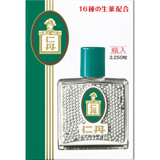
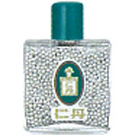

返回列表
产品名称：仁丹瓶入

森下仁丹 仁丹瓶入 ３２５０粒（医薬部外品）
メーカー 森下仁丹
JANコード 4987227225774
商品の特徴
16種の生薬配合
- 成分・分量
- ＜有効成分＞
阿仙薬、甘草末、カンゾウ粗エキス末、桂皮、丁字、益智、縮砂、木香、生姜、茴香、L-メントール、桂皮油、丁字油、ペパーミント油
＜その他の成分＞
甘茶、トウモロコシデンプン、バレイショデンプン、中鎖脂肪酸トリグリセリド、d-ボルネオール、香料、銀箔、アラビアゴム末
- 用法及び用量
- 大人（15才以上）1回10粒、11才以上15才未満1回7粒、8才以上11才未満1回5粒、5才以上8才未満1回3粒、1日10回まで適宜服用する。